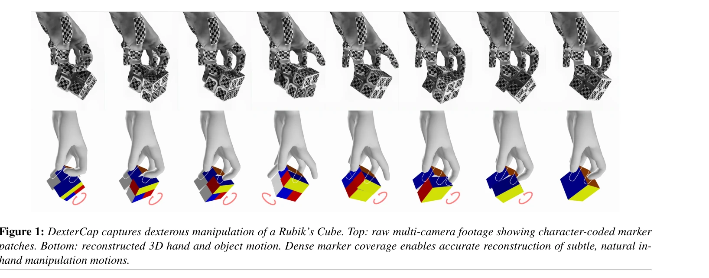
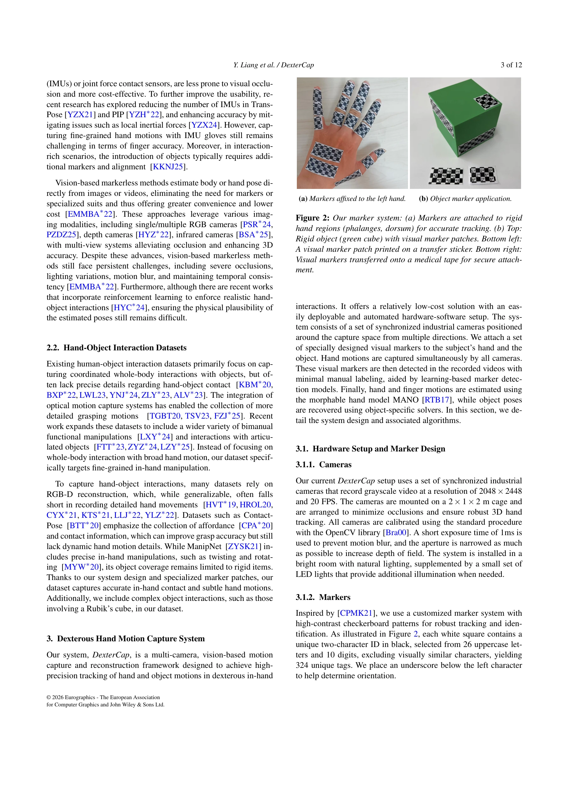
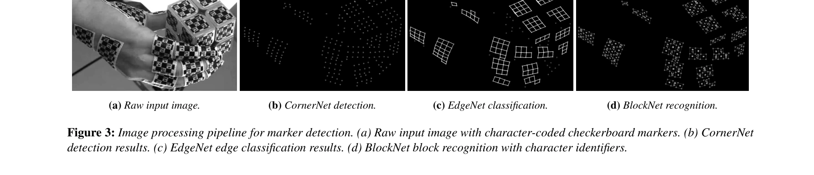

저자: Yutong Liang, Shiyi Xu, Yulong Zhang, Bowen Zhan, He Zhang, Libin Liu | 날짜: 2026-01-09 | URL: https://arxiv.org/abs/2601.05844

Figure 1: DexterCap captures dexterous manipulation of a Rubik’s Cube. Top: raw multi-camera footage showing character-c
DexterCap는 문자 코드화된 마커 패치를 사용하는 저비용 광학 모션 캡처 시스템으로, 심한 자기 폐색 상황에서도 손가락의 섬세한 조작 동작을 정확하게 추적하며 최소한의 수동 작업으로 자동 재구성 파이프라인을 제공한다.

Figure 2: Our marker system: (a) Markers are attached to rigid

Figure 3: Image processing pipeline for marker detection. (a) Raw input image with character-coded checkerboard markers.
총평: DexterCap은 문자 코드화 마커와 자동화 파이프라인을 통해 저비용으로도 섬세한 손 조작을 정확하게 캡처할 수 있음을 보여주며, 공개된 DexterHand 데이터셋과 함께 손-물체 상호작용 연구의 중요한 리소스로 기여한다.